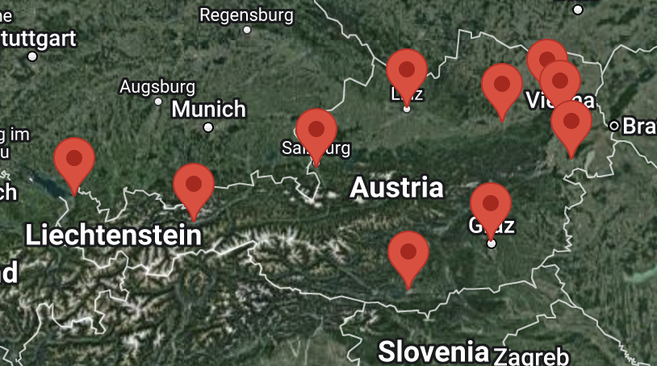

The models created in this project are used to trade electricity for over 7.5M € per year. They are created with historical consumption data from more than 10.000 customers and use weather data as inputs.
Quantitative Analysis
Machine Learning | Time Series Forecasting | Intraday Trading
Python | Tensor Flow | SciPy | Pandas
In the liberalized European energy market, electricity providers operate in a competitive environment where market forces play a significant role. This includes market mechanisms such as auctions, bilateral contracts, and power exchanges, to buy and sell electricity.
Energy forecasting enables entering the market, which involves matching the electricity supply with the predicted demand. By accurately predicting consumption patterns, providers can adjust generation and distribution resources in real-time to maintain a stable and reliable grid. This helps prevent imbalances, reduce costs, and enhance overall grid efficiency.
This Project is the center of my work at the energy provider aWATTar, which offers dynamic tariffs (also known as real-time pricing). The scope of this project was to create a scaleable code architecture, with which energy forecasting models are trained and used on a daily basis.
Code Architecutre: Handeling Big Data, Synchronization, Scaleability
Model Performance: Clustering customer behavior, Researching novel ML methods
Rapidly Changing Input: Short term trading, Freqent update of forecast
Volatile market: Risk analysis, Trading and long term business desicions
To forecast the energy consumption of 10.000 customers in Austria, it is needed to summarize them into individual clusters with similar behaviors. This was mainly made according to the physcial reality, e.g. cusomters with solar panels installed. After a detailed grid search analysis, these clusters were subdivided into 10 main regions.
For each region, weather data of several providers is collected, processed and then transformed to an input matrix for the prediction models. These models were trained with historical consumption data previously. The resulting forecast is done for one day in advance, and energy is traded in the intraday market.
In total, there are 10 Clusters and 10 Weatherstations, resulting in 100 Models. Additionally, customers either send daily or quarterhourly data, which currently gets forecasted differently. In total, 200 Models make up the foundation for the forecasting.
The following are actual forecasts for the dayahead trading. We see the quarterhourly (QH) models displayed in detail, while the daily (DA) models are combined in an interpolated curve which are not shown below.
The following are actual forecasts for the dayahead trading. We see the quarterhourly (QH) models displayed in detail, while the daily (DA) models are combined in an interpolated curve. The other contributions are from different energy sources.
Since the models have a big impact on the daily energy procurement, they have to be monitored as often as possible. For most of customers, energy data will be sent 6 weeks after delviery. However, a small subgroup sends the data after one or two days. Assuming these customers represent the average, it is valid to rescale their consumption to all customers. This is then compared with the actual forecast that gets recorded for every cluster.
Below is an example for the "SUNNY" cluster, meaning that these customers produce energy and aWATTar distributes that energy at the spot market. We see that the solid curves are the upscaled actual consumptions, while the dashed ones are forecasts. On some days, the forecast was not accurate because of a unstable weather prediction (or a bad model ;) ). This can be improved by trading electricity in the Intraday market instead of the day ahead market, because the forecast has a smaller prediction horizon.
Here is a schematic view of the projects architecture to give a rough idea of the complexity. Due to confidentality, it is not possible to go elaborate on how models are generated.
Currently, the forecasts are saved using Google Cloud services. The weather input data, as well as customer consumption data is saved with Kubernetes on a Database that is run on AWS.